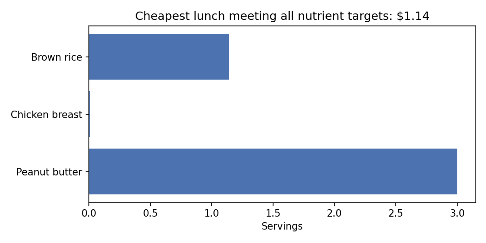
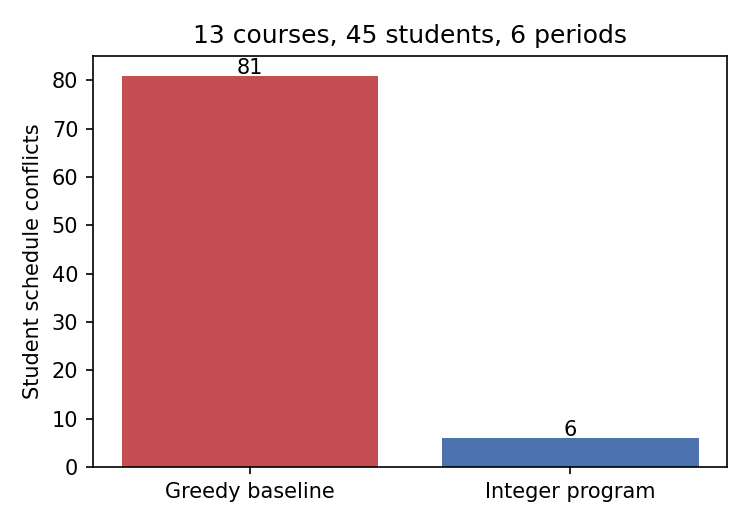
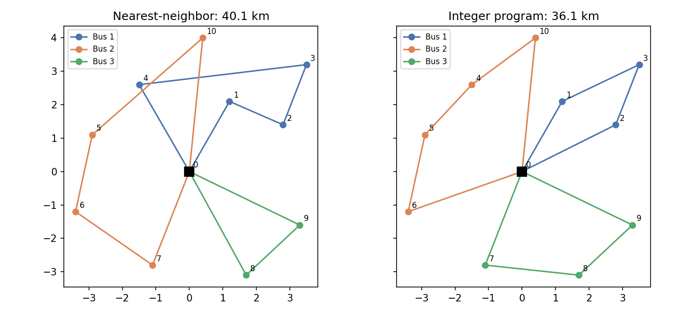

Project Overview
This project demonstrates three real optimization problems that schools solve daily, modeled as mathematical programs and solved with the open-source CBC solver. Each stage introduces a new layer of complexity and a fundamental optimization technique.
Why this matters for applied math:
- Stage 1 shows how to turn a real-world problem into a linear program and extract insights (shadow prices) from the solution.
- Stage 2 introduces integer variables and shows the gap between finding a good answer and proving nothing better exists.
- Stage 3 uses the Miller-Tucker-Zemlin constraint to elegantly enforce both capacity limits and route connectivity.
Performance Summary
| Stage | Problem | Type | By Hand | Optimized | Improvement | Solve Time |
|---|---|---|---|---|---|---|
| 1 | Cheapest lunch meeting nutrition targets | Linear Program | $2.45 | $1.14 | 53% savings | < 1 s |
| 2 | Timetable 13 courses, 45 students | Integer Program | 81 conflicts | 6 conflicts | 92.6% reduction | ~60 s |
| 3 | Route 3 buses to 10 stops | Capacitated Vehicle Routing | 40.11 km | 36.11 km | 10% reduction | ~6 s |
The Cheapest Nutritious School Lunch
The Question
Given 10 foods with known cost and nutrition facts, what is the cheapest lunch that meets calorie, protein, fiber, and sodium targets?
The Answer
Optimal menu: $1.14
The Model
Decision Variables
(servings of food i, continuous)
Objective
(total cost)
Constraints
0 ≤ x_i ≤ u_i (realism bounds)
Why This Matters
This is the classic diet problem from 1945, one of the first optimization problems solved with the simplex method. It teaches:
- Shadow prices: How much each nutrient bound costs you at the margin
- Complementary slackness: Why a zero dual value means the constraint is not tight
- Vertex solutions: Why the optimal menu uses only a few foods
The Result
| Nutrient | Amount | Target |
| Calories | 817.2 kcal | ≥ 850 |
| Protein | 30.0 g | ≥ 30 |
| Fiber | 10.0 g | ≥ 10 |
| Sodium | 432.1 mg | ≤ 1000 |

Sensitivity Analysis
The shadow price of a constraint tells you how much the optimal cost changes if that constraint's bound moves by one unit:
| Constraint | Current Value | Bound | Shadow Price | Interpretation |
|---|---|---|---|---|
| Protein minimum | 30.0 g | 30 g | +$0.0387/g | Each extra gram of required protein costs 3.9¢ |
| Fiber minimum | 10.0 g | 10 g | +$0.0018/g | Fiber is cheap at the margin |
| Calories minimum | 817.2 kcal | 850 kcal | $0 | Slack constraint; loosening it doesn't help |
Conflict-Free Course Timetabling
The Question
Assign 13 courses to 6 periods and 4 rooms so that no teacher or room is double-booked, and minimize student schedule conflicts.
The Answer
Student conflicts: 81 (greedy) → 6 (optimal, proven)
The Model
Decision Variables
y_{c,p} = Σ_r x_{c,p,r} (helper: course c meets in period p)
v_{s,p} ≥ 0 (integer) conflicts student s has in period p
Objective
(total student conflicts)
Hard Constraints (cannot break)
(2) No room double-booked
(3) No teacher double-booked
(4) Class fits room capacity (enforced by not creating variables)
Soft Constraint (minimize violations)
(if student has 2+ courses in period p, one is a conflict)
Three Advanced Techniques
- Soft constraints: Make violations countable and minimizable instead of infeasible
- Domain reduction: Never create a variable x_{c,p,r} if the class doesn't fit the room
- Symmetry breaking: Fix the first course in period 1 to eliminate equivalent relabelings
Optimal Schedule
| Course | Teacher | Size | Period | Room |
| Algebra II | Ms. Chen | 14 | P1 | R101 (30) |
| Precalculus | Mr. Ortiz | 15 | P1 | R201 (24) |
| AP Calculus | Dr. Lee | 17 | P1 | R102 (30) |
| Computer Science | Mr. Ortiz | 15 | P2 | LAB (18) |
| Biology | Dr. Patel | 13 | P4 | LAB (18) |

Why Proving Optimality Takes a Minute
The solver finds the 6-conflict solution in 2-3 seconds. The remaining time is spent proving that 5 conflicts is impossible.
The problem: When we relax the binary variables to continuous values between 0 and 1, the LP relaxation allows courses to split between periods (50% in period 1, 50% in period 2). This makes the lower bound on conflicts equal to 0, which is useless.
The solution: The solver uses branch-and-bound, exploring the search tree and tightening bounds. Valid inequalities (cuts) on the conflict graph would help, but the default solver uses general-purpose cuts, which takes time.
School Bus Routing
The Question
Ten bus stops with 58 students total. Three buses with 24 seats each. Which stops should each bus serve, in what order, to minimize total driving distance?
The Answer
Total distance: 40.1 km (nearest-neighbor) → 36.1 km (optimal)
The Model
Decision Variables
u_j ∈ [q_j, Q] students on board after picking up stop j
Objective
(total distance traveled)
Constraints
(2) Each stop has exactly one bus leaving
(3) At most K buses leave the school
(4) MTZ load: u_j ≥ u_i + q_j - Q(1 - x_{i,j})
(eliminates sub-tours AND enforces capacity!)
(5) Load bounds: q_j ≤ u_j ≤ Q
The Miller-Tucker-Zemlin (MTZ) Constraint Explained
Why constraint (4) does two jobs at once:
Case 1: x_{i,j} = 0 (bus doesn't go from i to j)
The constraint becomes u_j ≥ u_i + q_j - Q, which is weak because u_i ≤ Q. No effect.
Case 2: x_{i,j} = 1 (bus goes directly from i to j)
The constraint becomes u_j ≥ u_i + q_j. The load strictly increases!
Killing sub-tours: If a disconnected loop 1 → 2 → 3 → 1 existed (no school), then following (4) around the loop would give 0 ≥ q_1 + q_2 + q_3, a contradiction. Sub-tours are impossible because only the school has no u variable.
Enforcing capacity: u_j ≤ Q ensures load never exceeds bus seats.
Optimal Routes
School → Maple & 3rd → Oak Hill → Riverside Park → School
Bus 2 (22/24 students, 14.39 km):
School → Pine Court → Library → Elm Street → Meadow Dr → School
Bus 3 (17/24 students, 11.68 km):
School → Cedar Ave → Birch Lane → Station Rd → School

Model Size and Performance
110 binary arc variables
10 continuous load variables
90 Miller-Tucker-Zemlin constraints
+ flow conservation constraints
Solve time: ~6 seconds (proven optimal)
Easy "What-If" Experiments
Each question is just one line of code to change:
- Bus breaks down? Set buses = 2. Capacity = 48 < 58 students → infeasible (correct answer)
- Add a bus? Set buses = 4. Watch how much additional distance it saves
- Smaller buses? Set capacity = 20. Routes fragment to fit smaller vehicles
- New stop? Add one row to stops.csv. Nothing else changes
- Real road distances? Fetch from OpenStreetMap and replace Euclidean distances
Getting Started
Prerequisites
- Python 3.10+
- pip (Python package manager)
- Git (to version control your work)
Installation
Step 1: Clone and enter the directory
Step 2: Install dependencies
This installs PuLP (3.x), pandas, matplotlib, and pytest. PuLP bundles the CBC solver—no additional license needed.
Run Each Stage
Stage 1: Optimal lunch menu
Runs in <1 second. Prints the menu and shadow prices, saves figure.
Stage 2: Timetable (with proof of optimality)
Total: ~60 seconds. Solver proves 6 conflicts is optimal. (First command regenerates the random student data if you modify courses.csv.)
Stage 3: Bus routes
Runs in ~6 seconds. Compares nearest-neighbor greedy vs. optimal, saves route map.
Run Tests
All stages
~18 tests, ~40 seconds. Each test docstring states which constraint it guards.
Repository Structure
├── README.md # Main documentation
├── index.html # This file
├── requirements.txt # Python dependencies
├── stage1_menu_lp/
│ ├── model.py # The LP
│ ├── run.py # Solve and print results
│ ├── README.md # Detailed math
│ └── data/ # foods.csv, targets.csv
├── stage2_timetable_ip/
│ ├── model.py # The IP
│ ├── baseline.py # Greedy "by hand" method
│ ├── make_data.py # Generate student enrollments
│ ├── run.py # Solve and compare
│ ├── README.md # Detailed math
│ └── data/ # courses.csv, students.csv
├── stage3_bus_routing/
│ ├── model.py # The CVRP
│ ├── baseline.py # Nearest-neighbor heuristic
│ ├── run.py # Solve and compare
│ ├── README.md # Detailed math
│ └── data/ # stops.csv, config.json
├── tests/ # pytest test suite
└── figures/ # Generated charts (PNG)
Next Steps
Before submitting this to a college:
- Re-derive stage 2 from the README's math yourself. Admissions interviewers will ask you to explain each constraint.
- Extend one stage: Add a variety constraint to stage 1, or real road distances to stage 3. Customization shows ownership.
- Write a ½ page summary for your applications, explaining the three problems and your results. Keep it clear for non-engineers.
- Git commit with meaningful messages. Good history is part of the portfolio.